Pronto para romper os limites do combate elemental? O novo sistema de Fusão de Totens em Hero Wars: Dominion Era permite criar estratégias dinâmicas com Titãs como nunca antes!
Seja você um Comandante experiente ou esteja apenas começando sua jornada no Domínio, este guia revela como fundir habilidades poderosas nos seus Totens – dando aos seus Titãs a vantagem necessária para dominar cada batalha.
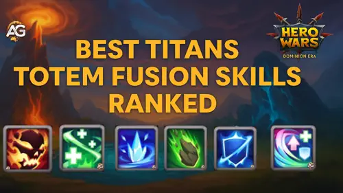
Guia de Fusão de Totens - Hero Wars: Dominion Era, um jogo desenvolvido pela Nexters.
O Que É a Fusão de Totens?
A Fusão de Totens é um recurso revolucionário em Hero Wars: Dominion Era que permite aprimorar seus Totens com dois novos tipos de habilidades – Elementais e Primitivas – além da habilidade básica. Essa atualização transforma estratégias estáticas em oportunidades criativas e táticas.
Habilidades Elementais concedem ao seu Totem habilidades de combate ativas, possibilitando efeitos que mudam o jogo, como atordoar inimigos ou aumentar o dano elemental. Já as Habilidades Primitivas são melhorias passivas que fortalecem seus Titãs aliados de acordo com as condições da batalha, como aumentar o poder de ataque ao serem curados.
Com seis Habilidades Elementais e cinco Primitivas disponíveis, todas atualizáveis até o nível 5, a Fusão de Totens abre caminho para personalizações de equipe sem precedentes e estratégias de sinergia avançadas. É hora de reinventar como você comanda seus Titãs.
Habilidades de Totem – Como Funciona a Fusão?
Fusão do Espírito Elemental
Ao fundir uma Habilidade que seu Totem já possui, as chances de obter essa mesma Habilidade novamente aumentam, assim como a chance de desbloqueá-la em um nível mais alto.
Se dois Totens diferentes em sua equipe compartilharem a mesma Habilidade, apenas um será ativado durante a batalha – a versão com o nível mais alto terá prioridade. Planejamento estratégico é essencial para evitar redundância e maximizar a eficiência da equipe.
As habilidades se comportam de maneira diferente dependendo do tipo. Habilidades Elementais normalmente são ativadas globalmente sem tempo de recarga, a menos que seja especificado o contrário. Já as Habilidades Primitivas ativam-se sob condições específicas e aplicam tempos de recarga individualmente para cada Titã.
Ao iniciar uma tentativa de Fusão, o Catalisador usado no processo será consumido. Se a Habilidade resultante não combinar com sua estratégia, não se preocupe – você terá a opção de rejeitar o resultado e reverter seu Totem ao estado anterior.
Catalisador Elemental vs Catalisador Primitivo – Qual é a Diferença?
Na Fusão de Totens, existem dois tipos de Catalisadores, e cada um tem uma função específica ao adicionar habilidades aos seus Totens. Escolher o certo depende do tipo de habilidade que você deseja desbloquear.
Catalisadores Elementais são usados na fusão de Habilidades Elementais ativas que afetam os Titãs inimigos durante a batalha. Essas habilidades normalmente são ativadas automaticamente e podem causar dano ou aplicar efeitos de controle de grupo.
Catalisadores Primitivos servem para fundir Habilidades Primitivas passivas. Essas habilidades apoiam seus Titãs aliados, melhorando o desempenho deles de acordo com as condições da batalha – como aumento de cura, escudos ou melhorias de atributos.
Abaixo está uma comparação rápida entre os dois tipos:
Tipo
Usado Para
Efeito da Habilidade
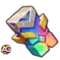
Catalisador Elemental
Habilidades Elementais
Efeitos ativos que são ativados globalmente (ex: atordoar, queimar)
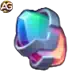
Catalisador Primitivo
Habilidades Primitivas
Efeitos passivos ativados por condições dos aliados (ex: cura, reforços)
Como Obter Catalisadores Elementais
Catalisadores Elementais são essenciais para desbloquear Habilidades Elementais ativas por meio da Fusão de Totens. Essas poderosas melhorias permitem que seus Totens desencadeiem efeitos devastadores durante a batalha – tudo começa com o recurso certo.
Para conseguir Catalisadores Elementais, você precisará trocar seus Fragmentos de Totem extras na interface de Fusão dentro do jogo. Se você vem acumulando fragmentos de eventos, baús ou pacotes, este é o momento de usá-los com sabedoria.
Basta ir ao menu de Fusão, escolher “Trocar” e selecionar quantos fragmentos deseja converter. Quanto mais você trocar, mais Catalisadores receberá – aumentando suas chances de desbloquear Habilidades Elementais de alto nível.
Dica: Guarde seus fragmentos para quando tiver uma habilidade-alvo em mente e lembre-se de usar vários Catalisadores de uma vez para aumentar o poder e a raridade do resultado!
Como Obter Catalisadores Primitivos
Uma das formas mais valiosas de obter Catalisadores Primitivos é desmontando um Presente Lendário do Domínio. Esse item raro é geralmente usado para aprimorar todo o equipamento de um herói para o nível Laranja – uma enorme economia de tempo.
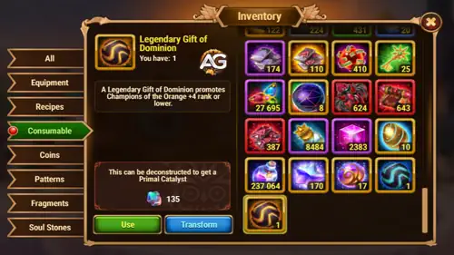
Como Obter Catalisadores Primitivos, Hero Wars Dominion Era.
No entanto, com a chegada da Fusão de Totens, o Presente Lendário se tornou ainda mais importante. Agora você pode transformá-lo em um Catalisador Primitivo, essencial para fundir Habilidades Primitivas aos seus Totens.
Se você já possui um Presente Lendário do Domínio e não precisa urgentemente melhorar o equipamento de um herói, considere usá-lo para a Fusão de Totens. Ele fornece 135 unidades de Catalisador Primitivo – o suficiente para aumentar significativamente suas chances de desbloquear uma Habilidade Primitiva de alto nível.
Dica: Presentes Lendários são raros e difíceis de encontrar, geralmente aparecendo como recompensas de alto nível durante eventos por tempo limitado. Use-os com sabedoria!
Qual Habilidade de Totem Elemental é Melhor para PvP?
Escolher a Habilidade Elemental certa para seu Totem pode ser a diferença entre vitória e derrota no PvP. Mas com seis habilidades poderosas, qual realmente se destaca? Vamos analisar de forma simples e empolgante!
Melhores Habilidades de Totem Elemental para PvP – Classificação e Explicação
Quer dominar nas batalhas PvP de Titãs? A Habilidade Elemental do seu Totem pode te dar vantagem – ou te atrapalhar se escolher errado. Vamos explicar cada uma de forma simples e mostrar quais são verdadeiros divisores de águas!
1º Lugar:
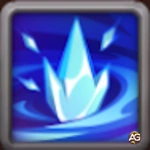
Era do Gelo
Era do Gelo congela todos os Titãs inimigos por 1 segundo quando o Totem deles é ativado e faz com que recebam mais dano por 5 segundos. Essa habilidade interrompe o inimigo no momento ideal e abre espaço para seu time atacar com força. É a melhor escolha para estratégias de PvP baseadas em controle.
2º Lugar:
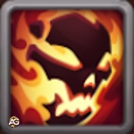
Último Clarão
Último Clarão permite que um Titã sobreviva com 1 de HP, fique invulnerável e cause dano massivo por 5 segundos. Pode virar uma luta perdida em uma vitória surpresa – especialmente se for ativado no fim da batalha. Perfeito para jogadas decisivas!
3º Lugar:
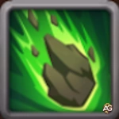
Ira das Profundezas
Ira das Profundezas é ativada quando um Titã morre – ele se transforma em pedra e cai sobre o time inimigo, causando dano em área e atordoando-os. Um golpe de interrupção poderoso, embora só aconteça uma vez por partida.
4º Lugar:
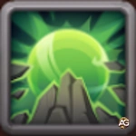
Murmúrio das Rochas
Murmúrio das Rochas cria um escudo de pedra que bloqueia dano e reflete o dobro de volta. É ótimo para times defensivos ou lutas longas, especialmente nas Guerras de Guilda. Mas carece do impacto ofensivo das habilidades mais bem colocadas.
5º Lugar:
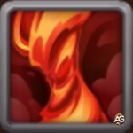
Dança das Chamas
Dança das Chamas invoca um vórtice de fogo que causa alto dano a múltiplos inimigos. É chamativa e divertida, mas por não ter controle ou suporte, pode decepcionar em confrontos PvP intensos.
6º Lugar:
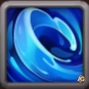
Sussurro das Profundezas
Sussurro das Profundezas cura seus Titãs e causa dano leve em área ao longo de 10 segundos. Embora útil em lutas longas ou PvE, não oferece o impacto rápido ou interrupção necessários na maioria dos combates PvP.
Resumo: Se o seu foco é dominar no PvP, opte por Era do Gelo ou Último Clarão. Elas oferecem controle e poder explosivo no momento certo. Use este ranking para montar a estratégia ideal para seus Titãs – e surpreenda seus inimigos com escolhas inteligentes de Totem!
Melhores Habilidades de Totem Primitivo para PvP – Classificação e Explicação
Escolher a Habilidade de Totem Primitivo certa pode ajudar seus Titãs a sobreviverem por mais tempo, causarem mais dano ou resistirem a ataques poderosos. Mas qual delas realmente dá vantagem no PvP? Vamos analisar uma por uma e descobrir!
1º Lugar:
Ciclo Triplo
Ciclo Triplo é a Habilidade Primitiva mais versátil e poderosa para PvP. Ela reage a qualquer reforço que seu Titã receba – cura gera mais dano, buffs viram escudos e escudos geram cura. Isso a torna perfeita para qualquer situação, oferecendo suporte constante à sua equipe. Até jogadores iniciantes se beneficiam sem precisar ativá-la manualmente!
2º Lugar:
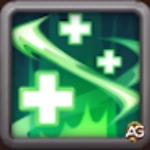
Pulso dos Antigos
Pulso dos Antigos cura seus Titãs toda vez que eles usam uma habilidade – simples, eficaz e muito confiável em lutas longas. Quanto mais sua equipe usar habilidades, mais cura receberá. Perfeito para times resistentes ou estratégias baseadas em cura.
3º Lugar:
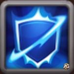
Égide do Eco
Égide do Eco concede ao seu Titã um segundo escudo após o primeiro ser quebrado. Essa defesa em camadas é ótima contra dano explosivo. Embora dependa da presença de escudos em sua equipe, é muito útil em composições PvP focadas em proteção e sobrevivência.
4º Lugar:
Chamado dos Elementos
Chamado dos Elementos aumenta o ataque do Titã quanto mais vida ele tiver perdido. É ótimo para composições agressivas – mas também arriscado. Você precisa sobreviver com pouca vida tempo suficiente para valer a pena, o que nem sempre é possível em lutas PvP rápidas.
5º Lugar:
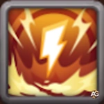
Zelo Primitivo
Zelo Primitivo dá ao seu Titã 20% de chance de restaurar energia ao usar a habilidade básica. Embora pareça bom, é aleatório e menos confiável em PvP competitivo. Funciona melhor em PvE ou como opção de suporte em lutas prolongadas.
Resumo:Ciclo Triplo é o grande vencedor do PvP por sua versatilidade e sinergia automática. Use esta lista como guia para melhorar suas Habilidades Primitivas com base na sua estratégia – seja ela defesa equilibrada, cura inteligente ou ofensiva agressiva!
❓ FAQ da Fusão de Totens
P: Se os Totens não podem mais ser trocados por Esmeraldas, eles ficarão mais acessíveis?
R: Sim! Embora os Totens continuem sendo itens raros e valiosos, o jogo oferecerá mais oportunidades ao longo do ano – incluindo formas gratuitas – para consegui-los.
P: Como podemos obter Catalisadores além de desmontar Totens?
R: Os Catalisadores serão recompensas em eventos regulares – alguns novos, outros já conhecidos. No lançamento, os jogadores receberão um pacote com Catalisadores Elementais e Primitivos para testarem o novo sistema!
P: Posso fundir Habilidades em um Totem abaixo do nível 130?
R: Com certeza. Você pode aplicar Catalisadores em Totens a partir do nível 1.
P: Como posso testar as novas habilidades fundidas?
R: O sistema de Fusão poderá ser testado no modo Treinamento de Combate assim que for lançado.
P: Totens abaixo de Estrela Absoluta podem usar Fusão?
R: Sim. Mesmo um Totem de 1 estrela pode se beneficiar da Fusão, desde que você tenha Catalisadores suficientes.
P: Posso trocar Presentes do Domínio verdes, azuis, violetas e amarelos por Catalisadores?
R: Sim. Todos os tipos de Presentes do Domínio podem ser trocados por Catalisadores Primitivos. Quanto mais raro o presente, mais Catalisadores você receberá.
P: Posso continuar presenteando Totens mesmo com todas as Fusões concluídas?
R: Sim, o recurso de presentear não é afetado pela Fusão de Totens.
P: Existe um sistema de compensação para tentativas de Fusão sem sucesso?
R: Sim. Cada uso de Catalisador concede “Poder Catalisado”. Ao atingir certa quantidade, você poderá desbloquear exatamente a Habilidade e o nível desejados – garantido.
Conclusão
A Fusão de Totens é um passo ousado em Hero Wars: Dominion Era, dando aos jogadores as ferramentas para romper com composições previsíveis e criar formações táticas personalizadas. Seja você um veterano comandante de Titãs ou esteja apenas começando nas batalhas elementais, esse novo sistema oferece mais poder, mais opções e muito mais diversão.
De habilidades ativas devastadoras a sinergias passivas inteligentes, a Fusão de Totens permite que você expresse seu estilo de jogo e surpreenda seus inimigos. Combine as habilidades Elementais e Primitivas certas para criar equipes imparáveis – e não tenha medo de experimentar. Às vezes, as combinações mais malucas são as mais poderosas.
Então, reúna seus Catalisadores, entre na câmara de Fusão e libere sua criatividade. O campo de batalha nunca mais será o mesmo!
Você gostou da nossa Tier List de habilidades de fusão de totens para Hero Wars: Web e Facebook Há algo que não entendeu ou gostaria de sugerir mudanças? Convidamos você a se juntar à nossa sessão de comentários na página do Alexandre Games Blog. Não hesite em expressar sua opinião, clarificar suas dúvidas e compartilhar sua sugestões. Clique no botão abaixo para começar:

 em Hero Wars: Dominion Era") Melhor Guia de Totens (Como conseguir Totens) em Hero Wars: Dominion Era
Melhor Guia de Totens (Como conseguir Totens) em Hero Wars: Dominion Era
 Calendário de Hero Wars: Dominion Era
Calendário de Hero Wars: Dominion Era Lista de Tier dos Heróis 2025 – Hero Wars: Dominion Era
Lista de Tier dos Heróis 2025 – Hero Wars: Dominion Era